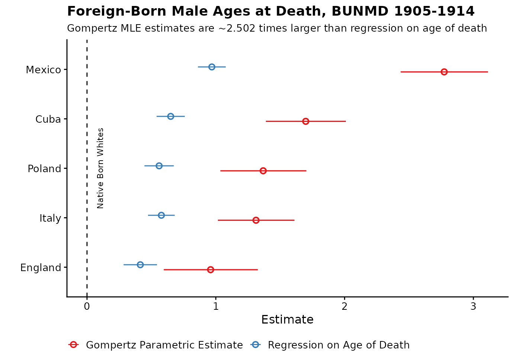
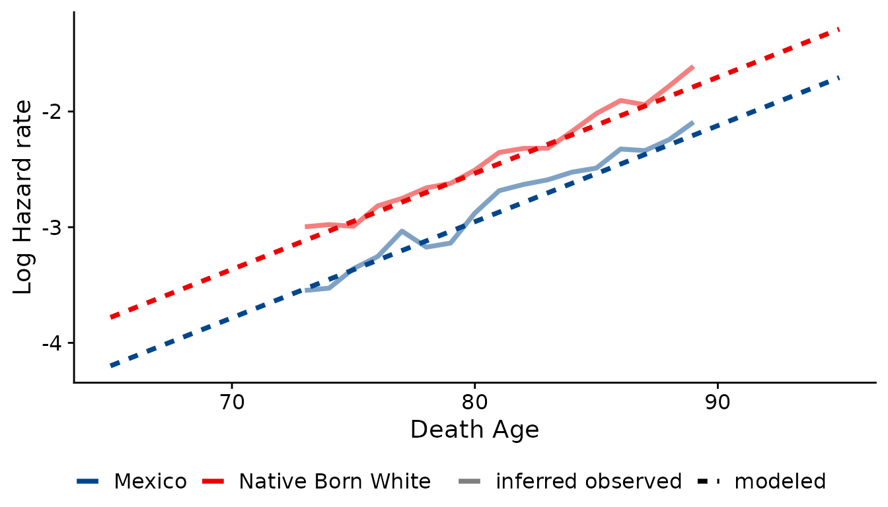

Analyzing doubly-truncated mortality data using the gompertztrunc package
Casey Breen (caseybreen@berkeley.edu)
gompertztrunc_vignette.RmdSummary
This vignette gives an overview of the gompertztrunc package and presents three case-studies illustrating the package’s functionality. The goal of this vignette is to give users a high-level overview of using the gompertztrunc package for mortality estimation including the use of weights, the specification and visualization of models, and limitations of this approach.
Background
Researchers increasingly have access to administrative mortality records that only include those who have died for a limited observation window without information on survivors. The double truncation and absence of denominators precludes the use of conventional tools of survival analysis. The gompertztrunc package includes tools for mortality estimation of doubly-truncated datasets without population denominators.
Summary of Parametric Gompertz Approach
This method assumes mortality follows a parametric Gompertz proportional-hazard model and uses maximum likelihood methods to estimate the parameters of this mortality distribution. Specifically, the hazard for individual \(i\) at age \(x\) given parameters \(\beta\) is given by
\[h_i(x | \beta) = a_0 e^{b_0 x} e^{\beta Z_i}\] where
- \(h(x)\) is the hazard at age \(x\)
- \(a_0\) is some baseline level of mortality
- \(b_0\) gives rate of increase of mortality
- \(Z_i\) are the covariates for person \(i\) (e.g., years of education, place of birth)
- \(\beta\) is the set of parameters
The model will estimate the values of \(\widehat{a}\), \(\widehat{b}\), and \(\widehat{\beta}\).
The main function in the package is the gompertztrunc::gompertz_mle function, which takes the following main arguments:
formula: model formula (for example, death_age ~ educ_yrs + homeownership)left_trunc: year of upper truncationright_trunc: year of lower truncationdata: data frame with age of death variable and covariatesbyear: year of birthmaxiter: maximum number of iteration for optim functionweights: an optional vector of person-level weights
Setup
## library packages
library(gompertztrunc) ## calculate mortality differentials under double-truncation
library(tidyverse) ## data manipulation and visualization
library(data.table) ## fast data manipulation
library(cowplot) ## publication-ready themes for ggplot
library(socviz) ## helper functions for data visualization (Kieran Healy)
library(broom) ## "tidy" model output
## load data
sim_data <- sim_data ## simulated
bunmd_demo <- bunmd_demo ## real
numident_demo <- gompertztrunc::numident_demo ## real Case Study I: Simulated Data
In our first case study, we use simulated (fake) data included in the gompertztrunc package. Because we simulated the data, we know the true coefficient values (we also know that the mortality follows a Gompertz distribution and our proportional hazards assumption holds).
## Look at simulated data
head(sim_data)## aod byear dyear temp sex isSouth
## 1: 87 1810 1897 -4.6198501 1 0
## 2: 78 1810 1888 -0.8841613 1 0
## 3: 79 1810 1890 0.7566703 1 0
## 4: 85 1810 1895 -0.6728037 1 0
## 5: 85 1810 1896 -3.8537981 1 0
## 6: 81 1810 1891 -1.2885393 1 0## min(dyear) max(dyear)
## 1 1888 1905Now let’s try running gompertz_mle() function on the simulated data:
## run gompertz_mle function
## returns a list
simulated_example <- gompertz_mle(formula = aod ~ temp + as.factor(sex) + isSouth,
left_trunc = 1888,
right_trunc = 1905,
data = sim_data)The gompertz_mle() function returns a list which contains three elements:
The initial starting parameters for the MLE routine. These starting parameter are found using OLS regression on age at death
The full
optimobject, which gives details of the optimization routine (e.g., whether the model converged)A data.frame of containing results: the estimated Gompertz parameters, coefficients, and hazards ratios with 95% confidence intervals.
We recommend always checking the full optim object to make sure the model has converged.
## 1. starting value for coefficients (from linear regression)
simulated_example$starting_values## log.b.start b0.start temp as.factor(sex)1 isSouth
## -2.30258509 -9.96897213 0.07505734 -0.18001387 0.22607193
## 2. optim fit object
simulated_example$optim_fit## $par
## log.b.start b0.start temp as.factor(sex)1 isSouth
## -2.2745186 -9.4083999 0.2068584 -0.5300299 0.5983461
##
## $value
## [1] 17549.16
##
## $counts
## function gradient
## 886 NA
##
## $convergence
## [1] 0
##
## $message
## NULL
##
## $hessian
## log.b.start b0.start temp as.factor(sex)1 isSouth
## log.b.start 283845.66 35822.202 -36549.785 20205.368 14017.009
## b0.start 35822.20 4536.154 -4552.676 2553.982 1783.017
## temp -36549.79 -4552.676 32378.684 -1569.926 -3199.463
## as.factor(sex)1 20205.37 2553.982 -1569.926 2553.949 1109.978
## isSouth 14017.01 1783.017 -3199.463 1109.978 1783.000
## 2. check model convergence (0 == convergence)
simulated_example$optim_fit$convergence## [1] 0
## 3. Look at model results
simulated_example$results## # A tibble: 5 × 7
## parameter coef coef_lower coef_upper hr hr_lower hr_upper
## <chr> <dbl> <dbl> <dbl> <dbl> <dbl> <dbl>
## 1 gompertz_b 0.103 0.0964 0.110 NA NA NA
## 2 gompertz_mode 69.4 64.4 74.3 NA NA NA
## 3 temp 0.207 0.194 0.219 1.23 1.21 1.25
## 4 as.factor(sex)1 -0.530 -0.590 -0.470 0.589 0.554 0.625
## 5 isSouth 0.598 0.536 0.661 1.82 1.71 1.94The first column gives the Gompertz \(b\) parameter, and the second row gives the Gompertz mode. The next three rows show each covariate’s estimated coefficient and associate hazard ratio. A hazard ratio compares the ratio of the hazard rate in a population strata (e.g., treated group) to a population baseline (i.e., control group). A hazard ratio above 1 suggests a higher risk at all ages and a hazard ratio below 1 suggests a smaller mortality risk at all ages (assuming proportional hazards).
## true coefficient values (we know bc we simulated them)
mycoefs <- c("temp" = +.2, "sex" = -.5, "isSouth" = +.6)
## compare our estimated values to true value
## we can only do this because this is simulated (fake) data
simulated_example$results %>%
filter(!stringr::str_detect(parameter, "gompertz")) %>%
mutate(true_coef = mycoefs) %>%
select(parameter, coef, coef_lower, coef_upper, true_coef)## # A tibble: 3 × 5
## parameter coef coef_lower coef_upper true_coef
## <chr> <dbl> <dbl> <dbl> <dbl>
## 1 temp 0.207 0.194 0.219 0.2
## 2 as.factor(sex)1 -0.530 -0.590 -0.470 -0.5
## 3 isSouth 0.598 0.536 0.661 0.6While investigators will ultimately report hazard ratios, translating hazard ratios into differences in life expectancy may help facilitate interpretation and comparison to other studies. We have included this functionality in the gompertztrunc package:
## translate hazard rates to difference in e65
convert_hazards_to_ex(simulated_example$results, age = 65, use_model_estimates = T) %>%
select(parameter, hr, hr_lower, hr_upper, e65, e65_lower, e65_upper)## # A tibble: 3 × 7
## parameter hr hr_lower hr_upper e65 e65_lower e65_upper
## <chr> <dbl> <dbl> <dbl> <dbl> <dbl> <dbl>
## 1 temp 1.23 1.21 1.25 -0.966 -1.02 -0.910
## 2 as.factor(sex)1 0.589 0.554 0.625 2.84 2.49 3.20
## 3 isSouth 1.82 1.71 1.94 -2.57 -2.80 -2.33Case Study II: Real-World Example with BUNMD Data
In our second case study, we look at the mortality advantage for the foreign-born. We use a demo dataset from the Berkeley Unified Numident Mortality Database (BUNMD).
## look at data
head(bunmd_demo)## # A tibble: 6 × 6
## ssn bpl_string death_age byear dyear age_first_application
## <int> <fct> <int> <int> <int> <int>
## 1 267729143 Cuba 89 1912 2002 49
## 2 266172087 Cuba 80 1911 1991 57
## 3 590072321 Cuba 92 1911 2004 69
## 4 265064566 Cuba 76 1913 1989 53
## 5 265877097 Cuba 86 1908 1995 70
## 6 264745485 Cuba 87 1915 2003 46## # A tibble: 6 × 2
## bpl_string n
## <fct> <int>
## 1 Native Born White 20000
## 2 Cuba 13194
## 3 England 7561
## 4 Italy 15306
## 5 Mexico 13755
## 6 Poland 11186First, let’s look at the distribution of deaths by country:
## distribution of deaths?
ggplot(data = bunmd_demo) +
geom_histogram(aes(x = death_age),
fill = "grey",
color = "black",
binwidth = 1) +
cowplot::theme_cowplot() +
labs(x = "Age of Death",
y = "N") +
facet_wrap(~bpl_string)Linear regression approach
Let’s look at the association between country of origin and longevity. First, we’ll try using a biased approach (OLS regression on age of death).
## run linear model
lm_bpl <- lm(death_age ~ bpl_string + as.factor(byear), data = bunmd_demo)
## extract coefficients from model
lm_bpl_tidy <- tidy(lm_bpl) %>%
filter(str_detect(term, "bpl_string")) %>%
mutate(term = prefix_strip(term, "bpl_string"))
## rename variables
lm_bpl_tidy <- lm_bpl_tidy %>%
mutate(
e65 = estimate,
e65_lower = estimate - 1.96 * std.error,
e65_upper = estimate + 1.96 * std.error
) %>%
rename(country = term) %>%
mutate(method = "Regression on Age of Death")Now we’ll perform estimation with the gompertztrunc package:
## Gompertz Trunc
## Use 1988-2005 because we are using BUNMD
gompert_mle_results <- gompertz_mle(formula = death_age ~ bpl_string,
left_trunc = 1988,
right_trunc = 2005,
data = bunmd_demo)
## convert to e65
## use model estimates — but can also set other defaults for Gompertz M and B.
mle_results <- convert_hazards_to_ex(gompert_mle_results$results, use_model_estimates = T)
## tidy up results
mle_results <- mle_results %>%
rename(country = parameter) %>%
filter(str_detect(country, "bpl_string")) %>%
mutate(country = prefix_strip(country, "bpl_string")) %>%
mutate(method = "Gompertz Parametric Estimate")
## look at results
mle_results## # A tibble: 5 × 11
## country coef coef_lower coef_upper hr hr_lower hr_upper e65 e65_lower
## <chr> <dbl> <dbl> <dbl> <dbl> <dbl> <dbl> <dbl> <dbl>
## 1 Cuba -0.229 -0.270 -0.188 0.796 0.764 0.829 1.70 1.39
## 2 England -0.130 -0.179 -0.0815 0.878 0.836 0.922 0.960 0.597
## 3 Italy -0.178 -0.217 -0.138 0.837 0.805 0.871 1.31 1.02
## 4 Mexico -0.369 -0.412 -0.325 0.692 0.662 0.723 2.77 2.44
## 5 Poland -0.185 -0.229 -0.141 0.831 0.795 0.869 1.37 1.04
## # … with 2 more variables: e65_upper <dbl>, method <chr>Visualize Results
Here, we compare our estimates from ‘unbiased’ Gompertz MLE method and our old ‘biased’ method, regression on age of death.
## combine results from both models
bpl_results <- lm_bpl_tidy %>%
bind_rows(mle_results)
## Calculate adjustment factor (i.e., how much bigger are Gompertz MLE results)
adjustment_factor <- bpl_results %>%
select(country, method, e65) %>%
pivot_wider(names_from = method, values_from = e65) %>%
mutate(adjustment_factor = `Gompertz Parametric Estimate` / `Regression on Age of Death`) %>%
summarize(adjustment_factor_mean = round(mean(adjustment_factor), 3)) %>%
as.vector()
## Plot results
bpl_results %>%
bind_rows(mle_results) %>%
ggplot(aes(y = reorder(country, e65), x = e65, xmin = e65_lower, xmax = e65_upper, color = method)) +
geom_pointrange(position = position_dodge(width = 0.2), shape = 1) +
cowplot::theme_cowplot(font_size = 12) +
geom_vline(xintercept = 0, linetype = "dashed") +
theme(legend.position = "bottom", legend.title = element_blank()) +
labs(
x = "Estimate",
title = "Foreign-Born Male Ages at Death, BUNMD 1905-1914",
y = "",
subtitle = paste0("Gompertz MLE estimates are ~", adjustment_factor, " times larger than regression on age of death")
) +
scale_color_brewer(palette = "Set1") +
annotate("text", label = "Native Born Whites", x = 0.1, y = 3, angle = 90, size = 3, color = "black")
Case Study III: Education and longevity analysis with person-weights
In our third case study, we look at the association between education and longevity. We’ll use a pre-linked “demo” version of the CenSoc-Numident file, which contains 63 thousand mortality records and 20 mortality covariates from the 1940 census (~1% of the complete CenSoc-Numident dataset). We’ll also incorporate person-level weights into our analysis.
Person-weights
The gompertz_mle() function can incorporate person-level weights via the weights argument. These person weights can help adjust for differential representation; the weight assigned to each person is proportional to the estimated number of persons in the target population that person represents. The vector of supplied weights must be long as the data, and all weights must be positive.
## load in file
numident_demo <- numident_demo
## recode categorical education variable to continuous "years of education"
numident_demo <- numident_demo %>%
mutate(educ_yrs = case_when(
educd == "No schooling completed" ~ 0,
educd == "Grade 1" ~ 1,
educd == "Grade 2" ~ 2,
educd == "Grade 3" ~ 3,
educd == "Grade 4" ~ 4,
educd == "Grade 5" ~ 5,
educd == "Grade 6" ~ 6,
educd == "Grade 7" ~ 7,
educd == "Grade 8" ~ 8,
educd == "Grade 9" ~ 9,
educd == "Grade 10" ~ 10,
educd == "Grade 11" ~ 11,
educd == "Grade 12" ~ 12,
educd == "Grade 12" ~ 12,
educd == "1 year of college" ~ 13,
educd == "2 years of college" ~ 14,
educd == "3 years of college" ~ 15,
educd == "4 years of college" ~ 16,
educd == "5+ years of college" ~ 17
))
## restrict to men
data_numident_men <- numident_demo %>%
filter(sex == "Male") %>%
filter(byear %in% 1910:1920 & death_age > 65)What’s the association between a 1-year increase in education and life expectancy at 65 (e65)? For this analysis, we’ll use the person-level weights using the weights argument in the gompertz_mle() function.
## look at person-level weights
head(data_numident_men$weight)## [1] 3.399339 3.507209 4.615740 4.092312 3.655178 7.781576
## run gompertz model with person weights
education_gradient <- gompertz_mle(formula = death_age ~ educ_yrs,
data = data_numident_men,
weights = weight, ## specify person-level weights
left_trunc = 1988,
right_trunc = 2005)
## look at results
education_gradient$results ## # A tibble: 3 × 7
## parameter coef coef_lower coef_upper hr hr_lower hr_upper
## <chr> <dbl> <dbl> <dbl> <dbl> <dbl> <dbl>
## 1 gompertz_b 0.0799 0.0736 0.0868 NA NA NA
## 2 gompertz_mode 73.9 67.2 80.5 NA NA NA
## 3 educ_yrs -0.0476 -0.0607 -0.0344 0.954 0.941 0.966
## translate to e65
mle_results_educ <- convert_hazards_to_ex(education_gradient$results, use_model_estimates = T, age = 65) %>%
mutate(method = "Parametric Gompertz MLE")
## look at results
mle_results_educ## # A tibble: 1 × 11
## parameter coef coef_lower coef_upper hr hr_lower hr_upper e65
## <chr> <dbl> <dbl> <dbl> <dbl> <dbl> <dbl> <dbl>
## 1 educ_yrs -0.0476 -0.0607 -0.0344 0.954 0.941 0.966 0.330
## # … with 3 more variables: e65_lower <dbl>, e65_upper <dbl>, method <chr>Here, for every additional year of education, the hazard ratio falls by 4.6% — which corresponds to an additional 0.33 year increase in e(65).
Now, let’s compare to a conventional method: OLS regression on age of death.
## run linear model
lm_bpl <- lm(death_age ~ educ_yrs + as.factor(byear), data = data_numident_men, weights = weight)
## extract coefficients from model
lm_bpl_tidy <- tidy(lm_bpl) %>%
filter(str_detect(term, "educ_yrs"))
## rename variables
ols_results <- lm_bpl_tidy %>%
mutate(
e65 = estimate,
e65_lower = estimate - 1.96 * std.error,
e65_upper = estimate + 1.96 * std.error
) %>%
rename(parameter = term) %>%
mutate(method = "Regression on Age of Death")
## Plot results
education_plot <- ols_results %>%
bind_rows(mle_results_educ) %>%
mutate(parameter = "Education (Years) Regression Coefficient") %>%
ggplot(aes(x = method, y = e65, ymin = e65_lower, ymax = e65_upper)) +
geom_pointrange(position = position_dodge(width = 0.2), shape = 1) +
cowplot::theme_cowplot(font_size = 12) +
theme(legend.position = "bottom", legend.title = element_blank()) +
labs(
x = "",
title = "Association Education (Years) and Longevity",
subtitle = "Men, CenSoc-Numident 1910-1920",
y = ""
) +
scale_color_brewer(palette = "Set1") +
ylim(0, 0.5)
education_plot
Summary and Limitations
The package can be used to estimate mortality differentials without population denominators. A few limitations to this approach:
The Gompertz law does not apply perfectly to any application, and major departures from either assumption may bias estimates.
This approach assumes proportional hazards: the survival curves for different strata have hazard functions that are proportional over time.
The computational demands of this approach are intensive, and the
gompert_mle()function runs into computational challenges when there are many parameters (e.g., models that have family fixed-effects).The sample distribution of available deaths must be representative of the population distribution of deaths.